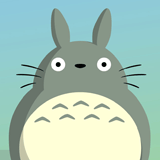

<ion-header>
  <ion-toolbar>
    <ion-buttons start>
      <button ion-button icon-only color="light">
        <ion-icon name="ios-contact"></ion-icon>
      </button>
    </ion-buttons>
      <ion-title>Mis Mascotas</ion-title>
    <ion-buttons end>
      <button ion-button icon-only color="light" (click)="creaMascota()">
        <ion-icon name="ios-add-circle"></ion-icon>
      </button>
    </ion-buttons>
  </ion-toolbar>
</ion-header>


<ion-content>
    <ion-refresher (ionRefresh)="recargarMascotas($event)">
        <ion-refresher-content></ion-refresher-content>
      </ion-refresher>
    <ion-list>
        <ion-item-sliding *ngFor="let mascota of mascotas">
          <ion-item (click)="consultaMascota(mascota)">
            <ion-thumbnail item-start>
              
            </ion-thumbnail>
            <ion-grid>
              <ion-row>
                <ion-col>
                    <h2>{{mascota.nombre}}</h2>
                </ion-col>
                <ion-col>
                    <h2>{{mascota.tipo}}</h2>
                </ion-col>
              </ion-row>
              <ion-row>
                <ion-col>
                  <p>{{mascota.raza}}</p>
                </ion-col>
                <ion-col>
                  <p>{{mascota.edad}} Años</p>
                </ion-col>
              </ion-row>
            </ion-grid>
            <button ion-button clear item-end>
              <ion-icon name="ios-arrow-forward"></ion-icon>
            </button>
          </ion-item>
          <ion-item-options side="right">
              <button ion-button color="danger"
              (click)="borrarMascota(mascota.id_mascota)">
                <ion-icon name="trash"></ion-icon>
                Borrar
              </button>
            </ion-item-options>
        </ion-item-sliding>

      </ion-list>

</ion-content>
